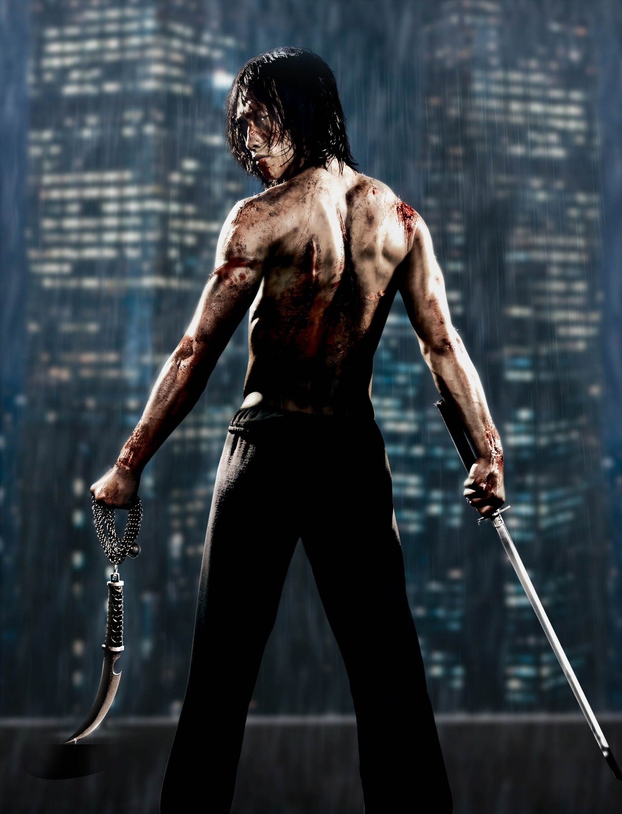

"This is not my family. And you are not my father. And the breath I take when I kill you will be the first breath of air in my life."
Raizo

Biography
For more than a thousand years, nine ninja clans have existed in our world, supplying the most stealthy and deadly assassins to those who can pay for their services. Raizo is an orphan picked up by the Ozunu clan and his best pupil. Trained from childhood to be a cold-blooded killing machine, the young man was still able to learn the brighter side of life. In the person of Kiriko - a girl who was also brought up as a killer, but did not want to be one. Raizou's doubts turned into confidence when Kiriko, who tried to escape, was executed in front of him. And soon, upon completion of his first mission, the young ninja opposed the clan that raised him. Since then, Raizo has been hiding from the persecution of the clans for some time and interferes with their business by killing other ninja.
Strength
- Peak human physical power
- Can cut enemies and weapons in half
- High explosive melee force
Speed & Reflexes
- Extremely fast blade combat execution
- Can react to other ninja attacks mid-combat
- Can strike multiple times in under a second
Endurance
- High pain tolerance
- Can continue fighting after gunshots and blade wounds
- Survived extreme physical trauma and falls
- Advanced self-regeneration techniques (limited)
Special Abilities
- Shadow movement / partial invisibility in low light
- Enhanced senses (hearing, smell, spatial awareness)
- “True Pain” strike technique
- Advanced ninjutsu and stealth assassination
Experience
Trained since childhood in the Ozunu clan and later became a rogue ninja hunted by multiple assassin organizations.
Equipment
- Dual ninjato swords
- Kyoketsu-shoge (chain blade weapon)
- Shurikens of multiple types
- Wrist climbing claws